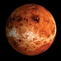
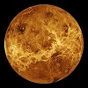
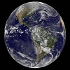
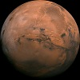
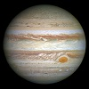
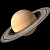
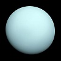
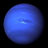
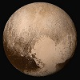

| Foto | Nome | Descrição |
|---|---|---|
.jpg) |
Sol | É uma estrela e fica no centro da nossa galáxia. |
|  | Mercúrio | O planeta mais próximo da nossa estrela. |
|  | Vénus | O segundo planeta mais próximo do Sol. |
|  | Terra | O nosso planeda :D |
|  | Marte | O Planeta vermelho :O |
|  | Júpiter | Outro Planeta :3 |
|  | Saturno | Um Planeta com anéis. |
|  | Urano | Um Planeta Azul claro. |
|  | Neptuno | Outro Planeta Azul mas mais Escuto ;D. |
|  | Plutão | O Planeta Renegado (Triste e Sozinho) :C. |